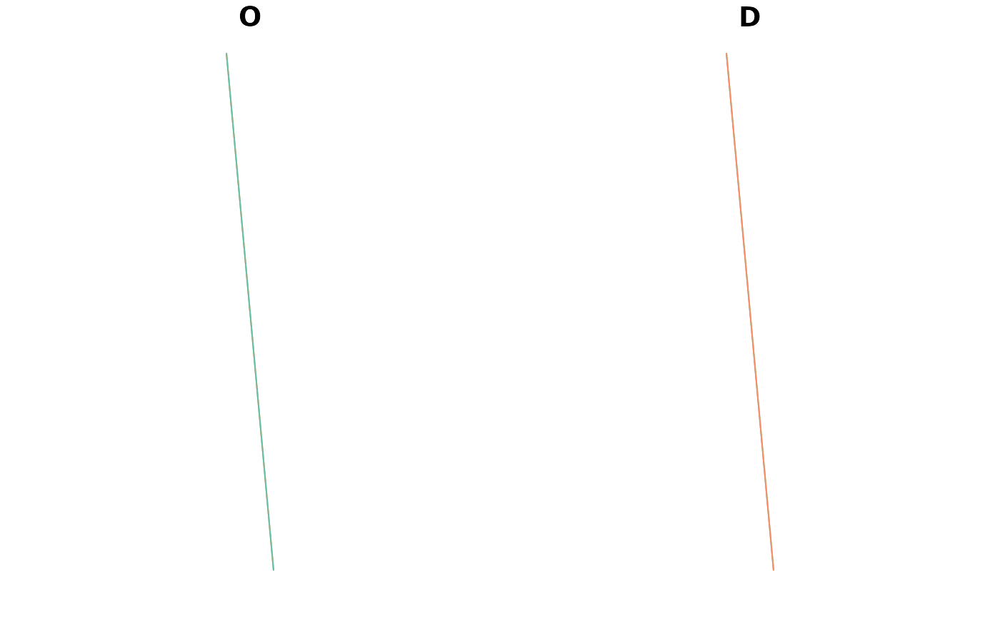

R/points_to_od.R
points_to_od.RdTakes a series of geographical points and converts them into a data.frame representing the potential flows, or 'spatial interaction', between every combination of points.
points_to_od(p, pd = NULL, interzone_only = FALSE, ids_only = FALSE)
points_to_odl(
p,
pd = NULL,
interzone_only = FALSE,
ids_only = FALSE,
crs = 4326
)A spatial points object or a matrix of coordinates representing points
Optional spatial points object or matrix objects representing destinations
Should the result only include interzonal OD pairs, in which
the ID of the origin is different from the ID of the destination zone?
FALSE by default
Should a data frame with only 2 columns (origin and destination IDs)
be returned? The default is FALSE, meaning the result should also contain the
coordinates of the start and end points of each OD pair.
The coordinate reference system of the output, if not known in z.
4326 by default.
points_to_odl() generates the same output but returns
a geographic object representing desire lines in the class sf.
library(sf)
p = od_data_centroids[1:3, ]
points_to_od(p)
#> O D ox oy dx dy
#> 1 E02002407 E02002407 -1.609934 53.79079 -1.609934 53.79079
#> 1.1 E02002407 E02002336 -1.609934 53.79079 -1.624630 53.88605
#> 1.2 E02002407 E02002353 -1.609934 53.79079 -1.518058 53.84066
#> 2 E02002336 E02002407 -1.624630 53.88605 -1.609934 53.79079
#> 2.1 E02002336 E02002336 -1.624630 53.88605 -1.624630 53.88605
#> 2.2 E02002336 E02002353 -1.624630 53.88605 -1.518058 53.84066
#> 3 E02002353 E02002407 -1.518058 53.84066 -1.609934 53.79079
#> 3.1 E02002353 E02002336 -1.518058 53.84066 -1.624630 53.88605
#> 3.2 E02002353 E02002353 -1.518058 53.84066 -1.518058 53.84066
points_to_od(p, ids_only = TRUE)
#> O D
#> 1 E02002407 E02002407
#> 2 E02002407 E02002336
#> 3 E02002407 E02002353
#> 4 E02002336 E02002407
#> 5 E02002336 E02002336
#> 6 E02002336 E02002353
#> 7 E02002353 E02002407
#> 8 E02002353 E02002336
#> 9 E02002353 E02002353
(l = points_to_odl(p, interzone_only = TRUE))
#> Simple feature collection with 6 features and 2 fields
#> Geometry type: LINESTRING
#> Dimension: XY
#> Bounding box: xmin: -1.62463 ymin: 53.79079 xmax: -1.518058 ymax: 53.88605
#> Geodetic CRS: WGS 84
#> O D geometry
#> 1 E02002407 E02002336 LINESTRING (-1.609934 53.79...
#> 2 E02002407 E02002353 LINESTRING (-1.609934 53.79...
#> 3 E02002336 E02002407 LINESTRING (-1.62463 53.886...
#> 4 E02002336 E02002353 LINESTRING (-1.62463 53.886...
#> 5 E02002353 E02002407 LINESTRING (-1.518058 53.84...
#> 6 E02002353 E02002336 LINESTRING (-1.518058 53.84...
plot(l)

library(sf) # for subsetting sf objects:
points_to_od(od_data_centroids[1:2, ], od_data_centroids[3, ])
#> O D ox oy dx dy
#> 1 E02002407 E02002353 -1.609934 53.79079 -1.518058 53.84066
#> 2 E02002336 E02002353 -1.624630 53.88605 -1.518058 53.84066
l = points_to_odl(od_data_centroids[1:2, ], od_data_centroids[3, ])
plot(l)
(od = points_to_od(p, interzone_only = TRUE))
#> O D ox oy dx dy
#> 2 E02002407 E02002336 -1.609934 53.79079 -1.624630 53.88605
#> 3 E02002407 E02002353 -1.609934 53.79079 -1.518058 53.84066
#> 4 E02002336 E02002407 -1.624630 53.88605 -1.609934 53.79079
#> 6 E02002336 E02002353 -1.624630 53.88605 -1.518058 53.84066
#> 7 E02002353 E02002407 -1.518058 53.84066 -1.609934 53.79079
#> 8 E02002353 E02002336 -1.518058 53.84066 -1.624630 53.88605
l2 = od_to_sf(od, od_data_centroids)
#> 0 origins with no match in zone ids
#> 0 destinations with no match in zone ids
#> points not in od data removed.
l2$v = 1
(l2_oneway = od_oneway(l2))
#> Simple feature collection with 3 features and 7 fields
#> Attribute-geometry relationships: aggregate (5), identity (2)
#> Geometry type: LINESTRING
#> Dimension: XY
#> Bounding box: xmin: -1.62463 ymin: 53.79079 xmax: -1.518058 ymax: 53.88605
#> Geodetic CRS: WGS 84
#> o d ox oy dx dy v
#> 1 E02002336 E02002353 -3.142688 107.7267 -3.142688 107.7267 2
#> 2 E02002336 E02002407 -3.234564 107.6768 -3.234564 107.6768 2
#> 3 E02002353 E02002407 -3.127992 107.6314 -3.127992 107.6314 2
#> geometry
#> 1 LINESTRING (-1.62463 53.886...
#> 2 LINESTRING (-1.609934 53.79...
#> 3 LINESTRING (-1.609934 53.79...
plot(l2)